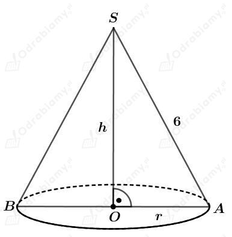
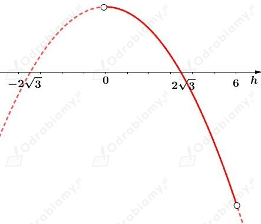
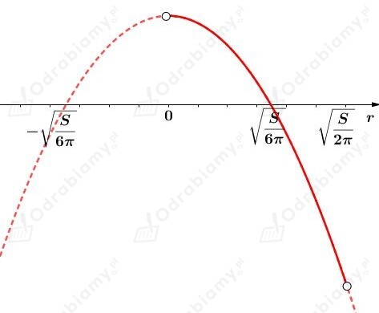

Dany jest stożek przedstawiony na rysunku:

Korzystając z twierdzenia Pitagorasa dla trójkąta OAS mamy:
Założenie:
więc
Wyznaczmy objętość stożka jako funkcję zmiennej h. Mamy:
Wyznaczmy pochodną funkcji V. Mamy:
Wyznaczmy miejsce zerowe funkcji pochodnej V'. Mamy:
Tylko liczba h=2√3 [cm] należy do dziedziny rozważanej funkcji.
Naszkicujmy przybliżony wykres pochodnej. Mamy:

Zauważmy, że
oraz
Zatem
oraz
Zatem objętość stożka jest największa dla h=2√3 [cm].
Wyznaczmy tę największą objętość. Mamy:
Odp. Największą możliwą objętością takiego stożka jest 16𝜋√3 cm3.
Dana jest puszka w kształcie walca o promieniu podstawy długości r i wysokości długości h.
Objętość tego walca jest równa 2 dm3. Mamy stąd:
Wyznaczmy pole powierzchni całkowitej tego walca jako funkcję zmiennej r. Mamy:
Wyznaczmy pochodną funkcji P. Mamy:
Wyznaczmy miejsce zerowe funkcji pochodnej P'. Mamy:
Zauważmy, że
oraz
Zatem
oraz
Zatem pole powierzchni całkowitej tego walca jest najmniejsze dla
Wyznaczmy długość wysokości tego walca. Mamy:
Wyznaczmy powierzchnię tej etykiety, czyli pole powierzchni bocznej tego walca. Mamy:
Dany jest walec o promieniu podstawy długości r i wysokości długości h.
Pole powierzchni całkowitej tego walca jest równe S. Mamy zatem:
Założenie:
zatem
Wyznaczmy objętość tego walca jako zmienną funkcji r. Mamy:
Wyznaczmy pochodną funkcji V. Mamy:
Wyznaczmy miejsce zerowe pochodnej V'. Mamy:
Zauważmy, że tylko druga liczba należy do dziedziny badanej funkcji.
Naszkicujmy przybliżony wykres pochodnej. Mamy:

Zauważmy, że
oraz
Zatem
oraz
Zatem objętość walca jest największa dla
Wyznaczmy długość wysokości tego walca. Mamy: